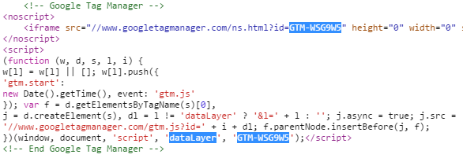

Google Tag Manager
The container and the code
Jarrod McGuire
## What's in this session
* What is GTM?
* The interface
* The Data Layer
* Demonstration
## What is GTM?
* GTM is a conduit for scripts and tags you wish to put on your website.
* It is a powerful and (reasonably) flexible tool that allows for built-in and custom scripts to be added to the website with the intention of little to no input from the developer.
* In reality there is more developer input than people generally account for. Actually a lot more.
## Why use it?
* Allows tags to be added to a site without additional deployments (usually)
* Allow data to be re-used in multiple tracking platforms
* All the cool kids are using it
## The interface
The main features of the GTM interface include:-
* Accounts
* The container
* Tags
* Triggers
* Variables
### Accounts
* The high level listing of grouped containers
* Ideal for associating containers belonging to a particular client

### Container
* Has all of the tags that will appear on the a site.
* Represented by a piece of code that goes on every page on your site.

### Tags
* Scripts that you want to appear on the website
* Some are easy: put this tag on a particular page
* Some are less easy: make transaction info available for ecommerce tag
### Triggers
* The rule for why the tag appears on the website
* There are built-in events to use, or you can make custom ones
### Variables
* Data that can be used in the trigger rule or the tag setup
* Variables can be:
** constants set in the interface
** pulled from the dataLayer (most common)
** but could be grabbed from a dom element on the page or a function result
### Other stuff
* Folders
* Version control
* Preview mode
## The Data Layer
* Allows data from the website to be passed to GTM
* Picked up by GTM when initialised, or pushed into GTM after initialisation
* The dataLayer is a array which you push objects into
### Example items put in the dataLayer
* Google UA Id. This would be put on the page before GTM initialisation
* Custom dimensions
* Ecommerce data
* Event tracking data
/* general check to see if the dataLayer exists already */
var dataLayer = dataLayer || [];
dataLayer.push({
googleAnalyticsUA: '@Model.GoogleAnalyticsUA'
});
## Demo
* Creating a new container
* Put code into page
* Preview mode
* Creating variables, tags and triggers